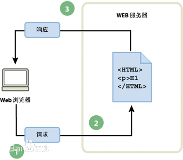
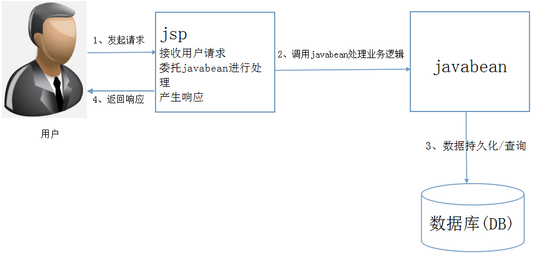
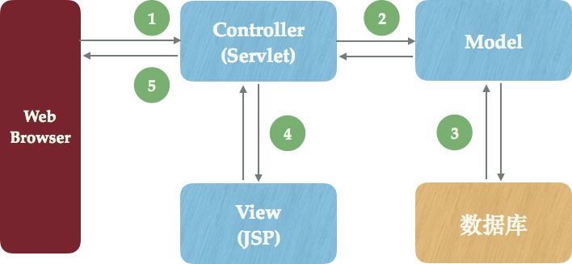
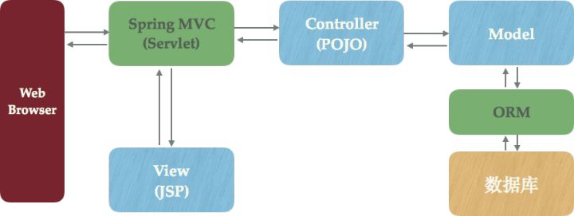
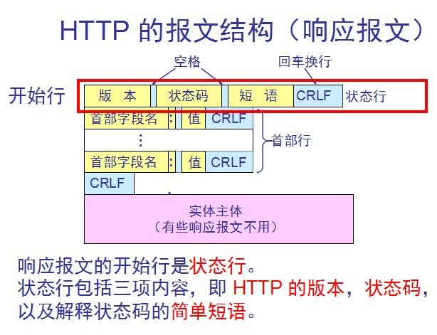
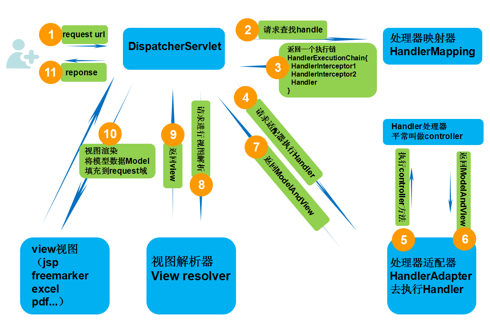
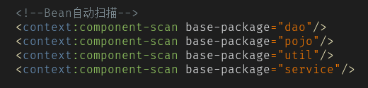
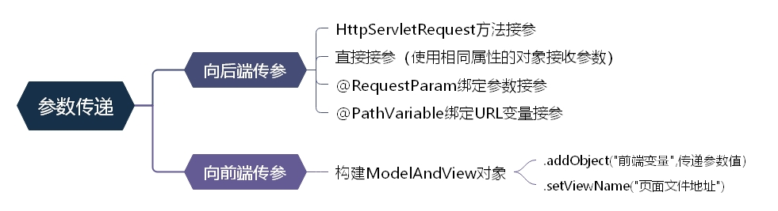

Spring里对应的MVC分别是什么
如何分发用户请求给不同的Controller的
分享人：徐竞容
1.背景介绍
2.知识剖析
3.常见问题
4.编码实战
5.扩展思考
6.参考文献
7.更多讨论
1.背景介绍
MVC设计模型的背景知识
静态网页结构示意图
没有后台数据库
不含程序 不可交互
MVC设计模型的背景知识
MV结构示意图
MVC设计模型的背景知识
MVC是一种应用程序的设计模式，名字代表三个英文单词：
Model（数据模型）、View（视图）、Controller（控制器）
MVC不是某种框架的简称，而是软件架构的设计思想
原来的应用程序是基于JSP+JavaBean开发模式进行设计
这种程序的设计模式过于将代码偶合在一起，不容易维护，也不容易扩展，更容易出现BUG
MVC设计模式的提出，解决了这些问题
MVC设计模式将功能模块分离，使程序模块独立出来，减少与其他模块的代码耦合，并且通过控制器来完成协调交互
MVC设计模型的框架应用
最典型的MVC模式为：jsp+servlet+javabean
JSP： 作为表现层，负责提供页面，为用户展示数据
也能通过点击按钮，向控制器发出请求来提交数据
Servlet: 作为控制器，负责响应请求，协调Model和View
Javabean： 作为模型，既可以作为数据模型来封装业务数据
也可以作为业务逻辑模型来封装业务操作
Struts框架应用
结构示意图
控制器(Controller)采用Servlet
模型(Model)采用JavaBean
视图(View)采用JSP
1. Web浏览器将HTTP请求发送到服务端
被Controller(Servlet)拦截捕获并处理
2. Controller(Servlet)调用核心业务逻辑——Model部分
3. Model进行数据库存取操作，并将操作结果返回给Model
4. Controller(Servlet)将业务逻辑处理结果交给View（JSP）
动态输出HTML内容动态生成的HTML内容
5. 返回到浏览器显示
Spring MVC框架的优势
MVC开发模式下，Java Web开发会遇到一些问题
URL路由、模板渲染、表单绑定/提交/验证、Session封装等
Spring MVC提供了一个DispacherServlet前端控制器
用来将这些通用功能都封装起来，交给Spring框架管理
（可以看成Spring MVC是以Servlet技术为基础的）
开发者只需要根据场景进行简单的配置和编码即可
Spring MVC框架应用
结构示意图
Servlet封装功能
URL映射（对应HTTP URL和方法，应该调用什么代码）
视图解析（使用哪个视图模板进行渲染）
参数解析（从Servlet中获得参数）
权限验证（当前的URL是否允许当前用户访问）
数据验证（判断数据是否符合业务规则）
数据绑定（将Servlet中的参数，绑定到业务逻辑对象中）
模型传递与视图渲染（将数据传递给模板并引用）
2.知识剖析
Spring MVC框架的原理
Spring MVC框架中，虽然采用了MVC的设计模式将模块分离
但是各个模块之间仍然存在大量的依赖关系
基于Spring MVC框架的核心功能：依赖注入（DI）
依赖注入用于管理模块对象间的依赖关系
Servlet配置，将功能交由Spring框架管理
通过依赖注入将模块所需要的功能注入到代码逻辑中
Spring MVC框架
框架示意图Spring MVC框架的请求传递
HTTP协议结构示意图

3.常见问题
配置文件的扫描问题，应该扫哪些包？
在spring.xml文件中配置持久层依赖包
在dispatcher.xml文件中配置表现层依赖包

Spring MVC框架的注解有哪些
注解用于构造IoC容器
@Controller： 对应表现层Bean，交给Spring框架管理调用
@Service： 对应业务层Bean，交给Spring框架自动创建对象
@Repository： 对应数据访问层Bean，创建实例注入Service
Spring MVC框架的参数传递
4种参数传递方法
4.编码实战
5.扩展思考
Spring MVC框架的缺点
（1）Spring MVC框架由于将所有构件功能都封装起来
所以对于定制化需求不容易修改
（2）而对于精细化开发，虽然提高了开发效率
但是有过度设计的危险
6.参考文献
https://www.cnblogs.com/leskang/p/6101368.html
6.讨论问题
1.
7.更多讨论
分享到此结束
谢谢大家！